Case SetupCase Objective & Key Identifiers
The objective is to identify the wallet cluster, operator pattern, and likely coordinated group behind the CR7 token launch and related Jito bundle activity.
Key Identifiers
| Token | CR7 |
|---|
| Mint Address | XGbMLzy8r7iJN96huatiyv3VtJ3o1VYjpVzSz7Zpump |
|---|
| Creator Wallet | 8qNzt6DxDtZYj8jhrm8NP7sNsMz1QzudymKxS5GPCX4Q |
|---|
| Launch Platform | Pump.fun |
|---|
| Bundle Platform | Jito |
|---|
| Website | cr7.life |
|---|
Evidence Placement Logic
Images are placed inside the exact section they support, not in one generic gallery.
SolscanJito ExplorerdeBridgeBlockscanEtherscanX / TwitterTelegram
Jito Bundle & Wallet Network Analysis
Jito bundle activity shows coordinated launch execution, validator tipping, liquidity setup, and multiple bundled buy transactions.
CR7 Bundle
Bundle Hash:
dd917963c059b85136b2d8f9daea822b24326cfb6a95c31b7c8513f287f72125
Signer: 8qNzt6...GPCX4Q
Interpretation
- Planned transaction ordering
- Priority execution
- Coordinated wallet participation
- Controlled launch execution
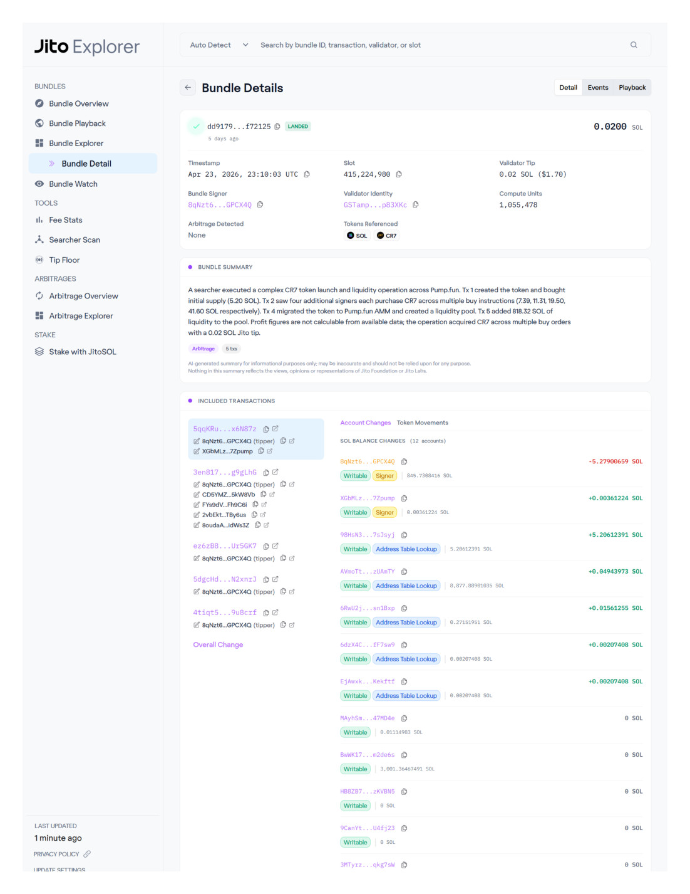
Figure 1 — CR7 Jito Bundle
Shows bundle execution, signer wallet, validator tip, token reference, and included transactions.
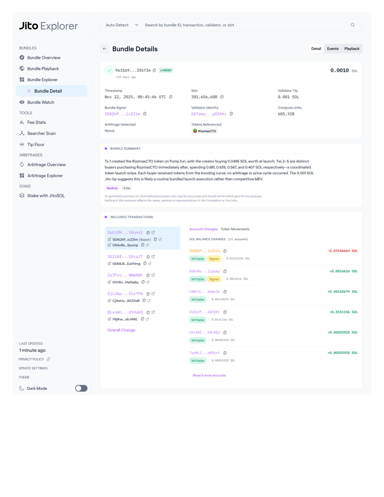
Figure 2 — RizzmasCTO Jito Bundle
Supporting evidence that bundled launch execution also appeared in the prior Rizzmas phase.
Creator Wallet Funding, Swaps & Exit Strategy
The financial pattern indicates staged funding, token creation, liquidity, swap conversion, bridge movement, and exchange-directed exit.
flowchart TD
SOL0[Solana Source Flow] --> DB1[deBridge]
DB1 --> ETH1[Ethereum-side Wallet]
ETH1 --> DB2[deBridge / Routing]
DB2 --> SOL[Solana Creator Wallet
8qNzt6...]
SOL --> CREATE[Pump.fun Token Creation]
CREATE --> JITO[Jito Bundle Execution]
JITO --> LP[Liquidity / Pool Activity]
LP --> SWAP[WSOL to USDC Swaps]
SWAP --> CEX[Coinbase / Exchange Infrastructure]
Ethereum-side Wallet
0xec133e55b8f0e717caf7a76831a13d956d447d28
Primary Final Destination
4NyK1AdJBNbgaJ9EsKz3J4rfeHsuYdjkTPg3JaNdLeFw
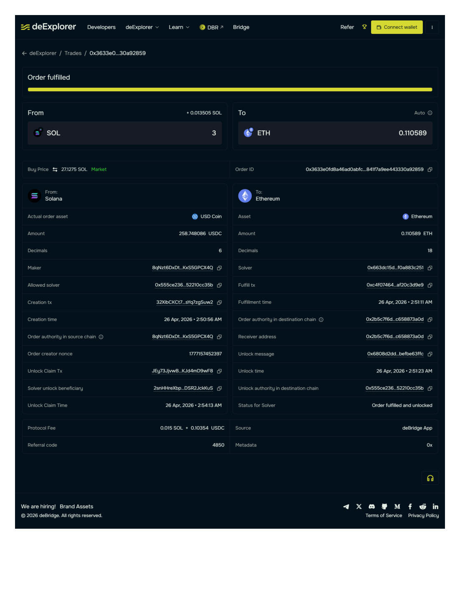
Figure 3 — deBridge Cross-Chain Movement
Shows creator wallet interaction with deBridge and cross-chain movement associated with the operational flow.
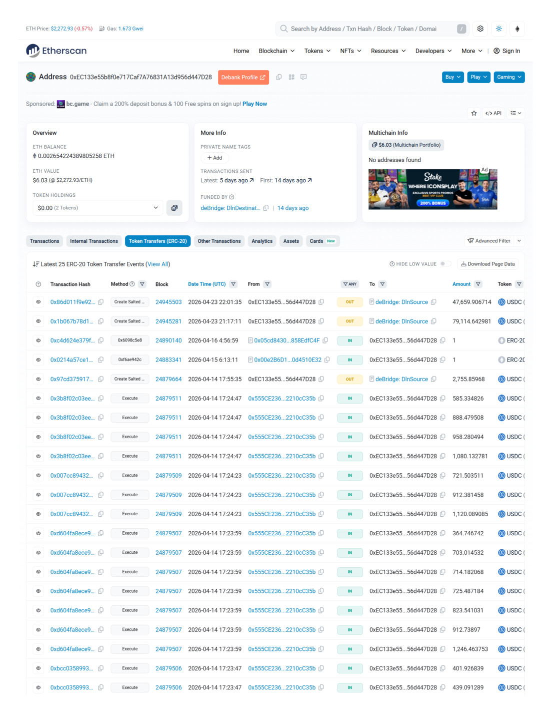
Figure 4 — Ethereum-side Wallet
Shows Ethereum-side address activity and bridge-linked inflows / token movement.
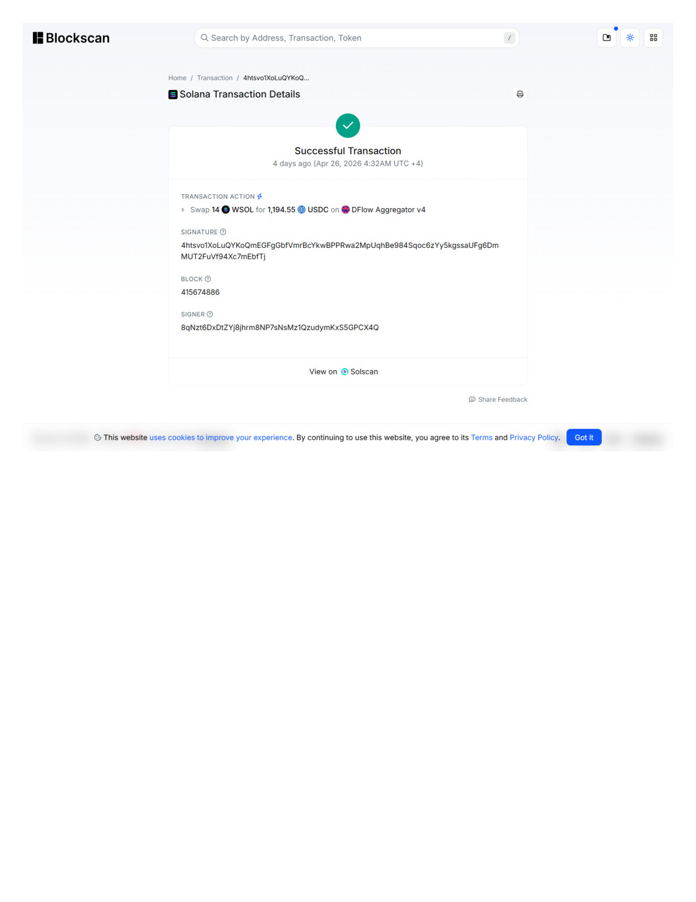
Figure 5 — WSOL → USDC via DFlow
Confirms swap conversion using DFlow Aggregator with the same signer wallet.
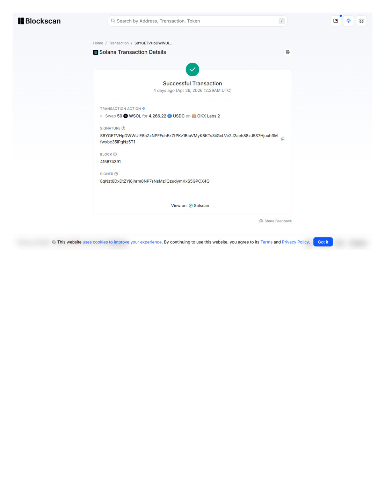
Figure 6 — WSOL → USDC via OKX Routing
Additional conversion path using OKX Labs routing, supporting structured exit behavior.
Ethereum Execution-Layer Routing / Beaverbuild Evidence
Ethereum-side analysis shows that funds bridged through deBridge were routed via an intermediary address associated with execution-layer infrastructure, rather than a simple direct wallet-to-wallet transfer.
flowchart LR
A[Solana] --> B[deBridge]
B --> C[Ethereum]
C --> D[Builder / Execution Layer
Beaverbuild]
D --> E[Destination Wallet
0xEC133e55...]
Observed Intermediary
0x555CE236...2210cC35b
Observed as source of multiple USDC inflows to the Ethereum-side destination wallet.
Analytical Meaning
- Use of MEV / builder infrastructure
- Indirect transaction execution
- Additional abstraction between source and destination
- Reduced direct traceability
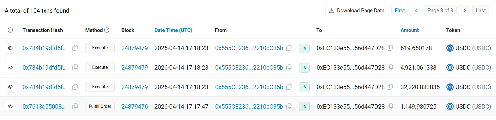
Figure 7 — USDC Inflows via Intermediary Address
Etherscan token transfers show multiple USDC inflows from 0x555CE236...2210cC35b to 0xEC133e55...d447D28, including large grouped amounts.
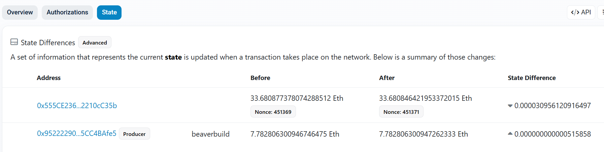
Figure 8 — State Difference / Beaverbuild Reference
Etherscan state view shows the intermediary address with a builder / producer reference, supporting execution-layer routing analysis.
Interpretation: This strengthens the assessment that the operator used advanced transaction routing and infrastructure abstraction. It does not identify the real-world actor, but it shows the flow was technically structured rather than casual.
Limitation: Builder infrastructure is not the attacker or owner. It is an execution layer used in the transaction path.
Metadata & Official Campaign LinkWebsite, Metadata & Social Linkage
The token metadata directly references the X account and website, creating creator-level campaign linkage.
| Metadata Field | Value | Interpretation |
|---|
| twitter | https://x.com/CR7TheLastDance | Social account defined inside token metadata. |
| website | https://cr7.life | Website defined inside token metadata. |
| createdOn | https://pump.fun | Confirms Pump.fun creation context. |
Interpretation: The X account and website are not random external promotion assets; they are part of the official branding layer defined in the token metadata.
Promotion Layer EvidenceSocial Media & Promotion Evidence
Promotion evidence supports the off-chain coordination layer and shows how the contract was distributed through X and Telegram.
Independent Warning & Campaign Reset Behavior
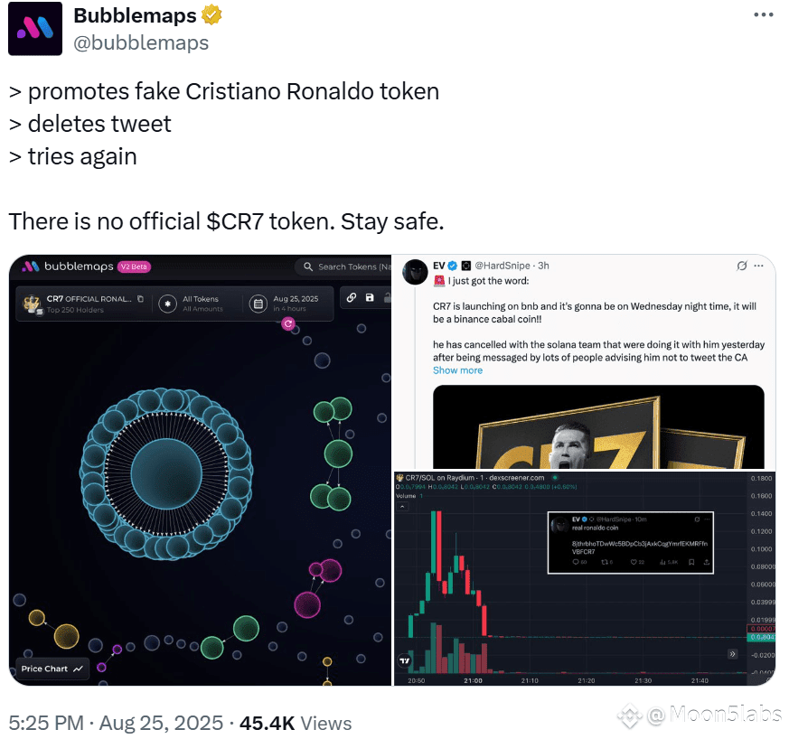
Figure 9 — BubbleMaps Warning
Third-party warning highlights fake CR7 promotion, tweet deletion, and repeated attempts.
Telegram Early Distribution
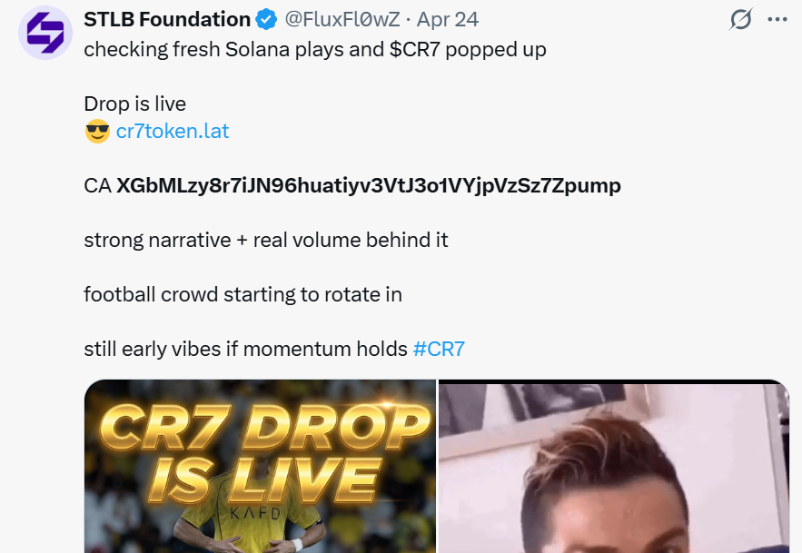
Figure 10 — Ev’s Alphas Contract Share
Telegram channel shared the exact CR7 contract with “CR7 thank me later” messaging.
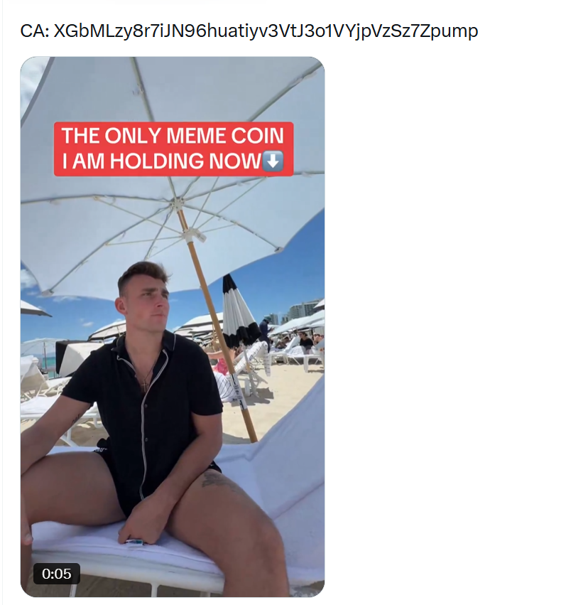
Figure 11 — Telegram Video Promotion
Video-style promotion using the CR7 contract and “only meme coin I am holding now” narrative.
Promoter Identity Linkage
Figure 12 — EV / @HardSnipe X Profile
X profile linked to t.me/HardSnipe and crypto promotional identity.
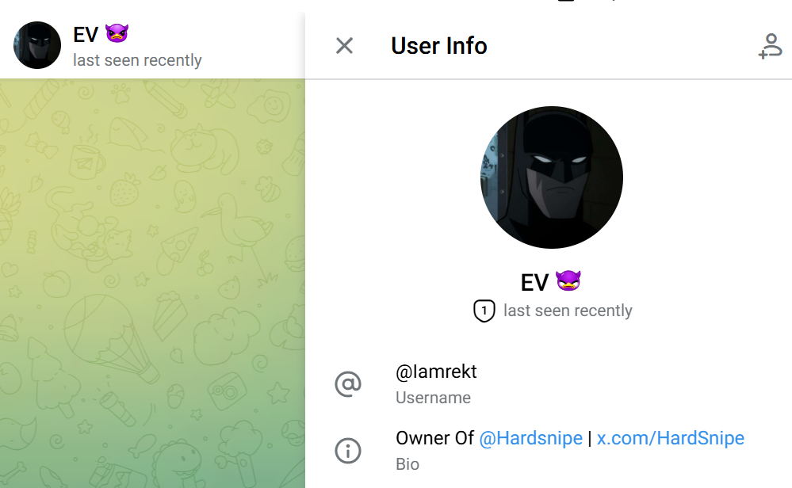
Figure 13 — Telegram Identity @IamRekt
Telegram user profile links @IamRekt to @HardSnipe / X.com/HardSnipe.
X Launch Amplification & Paid Promotion
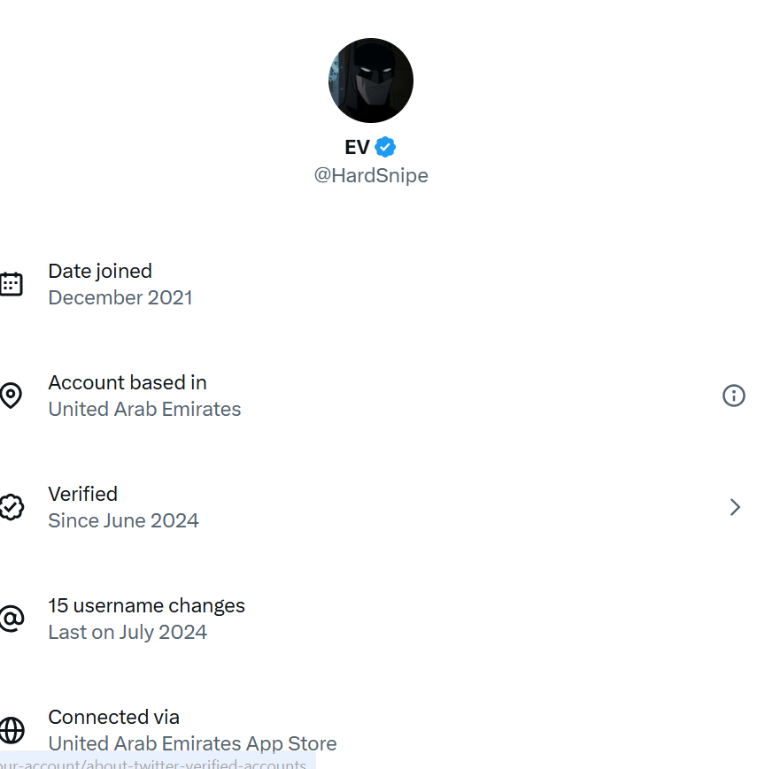
Figure 14 — Launch Promotion Post
CR7 contract promoted with “Drop is live” and “strong narrative + real volume” messaging.
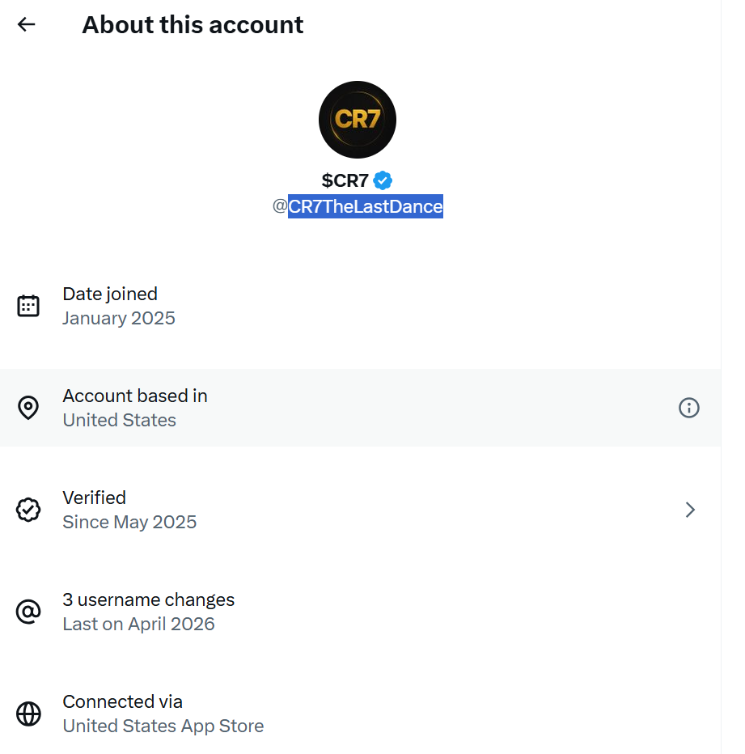
Figure 15 — Paid Promotion Indicator
Post explicitly marked as paid partnership, supporting incentivized marketing.
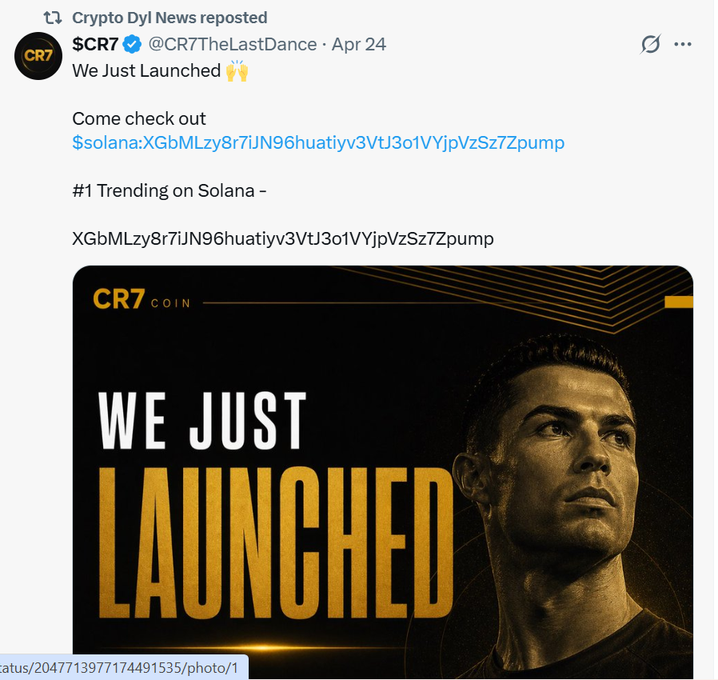
Figure 16 — Narrative Engineering
Promotion uses CR7 / football / early-entry framing to create urgency and legitimacy.
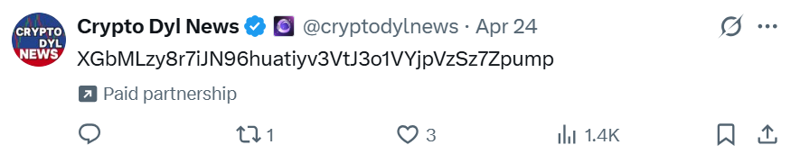
Figure 17 — CR7 Launch Account Post
@CR7TheLastDance promoted the contract as “We Just Launched” and “#1 Trending on Solana”.
Safe conclusion: These images support promotion-layer coordination, but they do not prove that the promoters owned the creator wallet.
Social Identity ReuseCR7 Account Behavior & Identity Reuse
The CR7 X account shows multiple username changes and aligns with token names observed during the investigation.
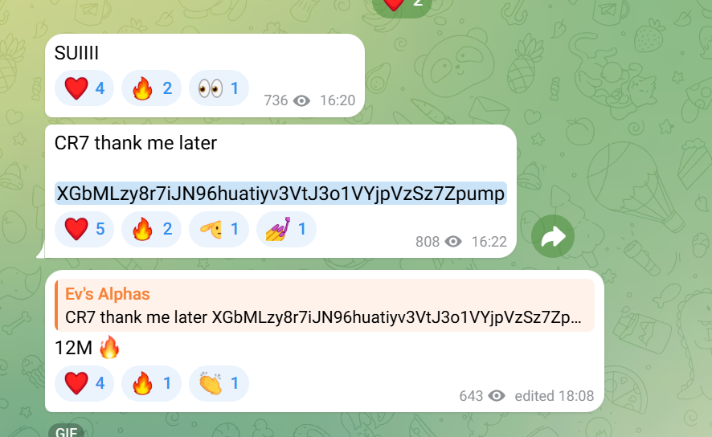
Figure 18 — CR7 Account Info
Shows account creation, verification, location, and username change history.
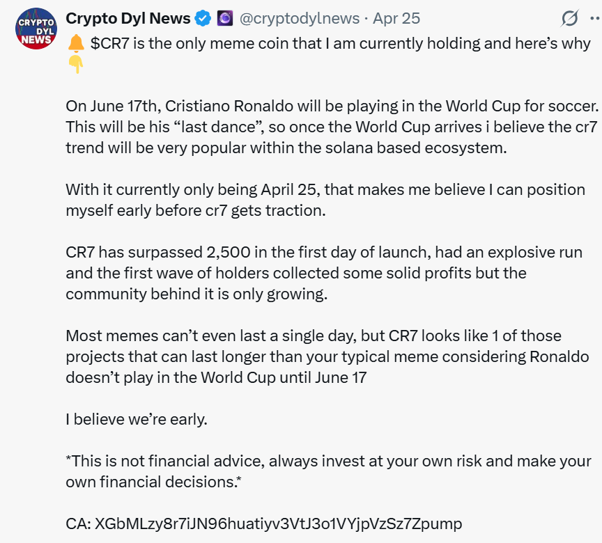
Figure 19 — @HardSnipe Account Info
Shows account age, UAE-based indication, verification, and multiple username changes.
flowchart LR
A[@RuglyAI] --> B[@RizzmasCTOCoin]
B --> C[@CR7TheLastDance]
Interpretation: Username history supports account reuse across token-related naming phases. Deleted historical posts limit certainty about earlier promotional content.
Final AssessmentAttribution Conclusion
The investigation did not confirm a real-world legal identity. However, the combined evidence strongly supports a coordinated operator group centered around:
8qNzt6DxDtZYj8jhrm8NP7sNsMz1QzudymKxS5GPCX4Q
Creator Wallet
Central to funding, token creation, bundle execution, liquidity, swaps, and exit routing.
Jito Bundle
Confirms planned, technically controlled launch execution rather than fully organic trading.
Execution-Layer Routing
deBridge and Beaverbuild-related routing show advanced transaction handling and abstraction.
Promotion Layer
Metadata, website, X account, Telegram promotion, and paid amplification support off-chain coordination.
Final Position: The CR7 token activity cannot be classified as organic market behavior. It reflects a repeatable deployment model using controlled wallets, bundled execution, campaign-style promotion, temporary accounts, cross-chain routing, execution-layer abstraction, and exchange-directed exits.
Social Media & Promotion Evidence
Promotion evidence supports the off-chain coordination layer and shows how the contract was distributed through X and Telegram.
Independent Warning & Campaign Reset Behavior

Telegram Early Distribution


Promoter Identity Linkage

X Launch Amplification & Paid Promotion



